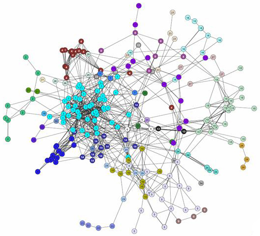

CASA
Community App Store Architecture
by Eric Bollens
ebollens [GitHub] / ebollens [LinkedIn] / @ericbollens [Twitter]
The Approach
Search is not Sufficient
The World Wide Web is vast and uncurated
Limited ability to identify capabilities and relevancy
Device support
Interoperability
World view
A model that already does this well...
App Stores
Web App Stores
Several implementations in the wild
but we're not quite there yet
Each organization contacts peers for apps
(1/2)*N*(N-1) connections to be complete
Aggregator that acts as a central repository of apps
Homogenous world view and centralized trust
An Alternative Approach
The Peer-to-Peer Model
Establish peering relationships
Share apps with others
Learn about apps from others
Allow apps to propagate
Don't Start from Scratch
The Internet already provides an example
Border Gateway Protocol
Used by autonomous systems to communicate routes
Superset of both sharing models
Decentralized topology at core
Star topologies in subgraphs
Leads to a small-world network
Small-world Networks
Propagation efficiency is L α log N
Adjacent nodes are defined autonomously
The Architecture
Apps
Represented by metadata
Identity
URI and Author
Timestamp
Share and Propagate
Required Attributes
Optional Attributes
Highly extensible structure
Peering Relationships
Define inbound and outbound peers
Support for asymmetric relationships
Discovering Apps
Query inbound peers for apps
Filters for apps you're willing to accept
Transforms app metadata
Present to outlets
Sharing Apps
Abide by outbound peer, filter and transform settings
Share apps originated by the peer
Propagate apps marked for propagation
The Constituents
Protocol
github.com/uShare/protocol/blob/master/protocol.md
Attribute mapping between UUID and name
Extensible for new metadata structures
Journalled history of attribute transformations
Engine
raw.github.com/uShare/protocol/master/architecture.pdf
When receiving apps
Translate UUIDs
Squash journal
Filter apps
Transform metadata
Reverse process for sharing
Outlets
Outlets may take many forms
Mobile dashboard
LMS tools
Campus portal
Query engine for current apps
Present relevant apps to end users

Current Status
Protocol Document
github.com/uShare/protocol/blob/master/protocol.md
Architecture Diagram
raw.github.com/uShare/protocol/master/architecture.pdf
Reference Implementation
Development pending for Engine and LTI App Store
THANK YOU
Any Questions?
ebollens.github.io/presentations/casa
ebollens [GitHub] / ebollens [LinkedIn] / @ericbollens [Twitter]